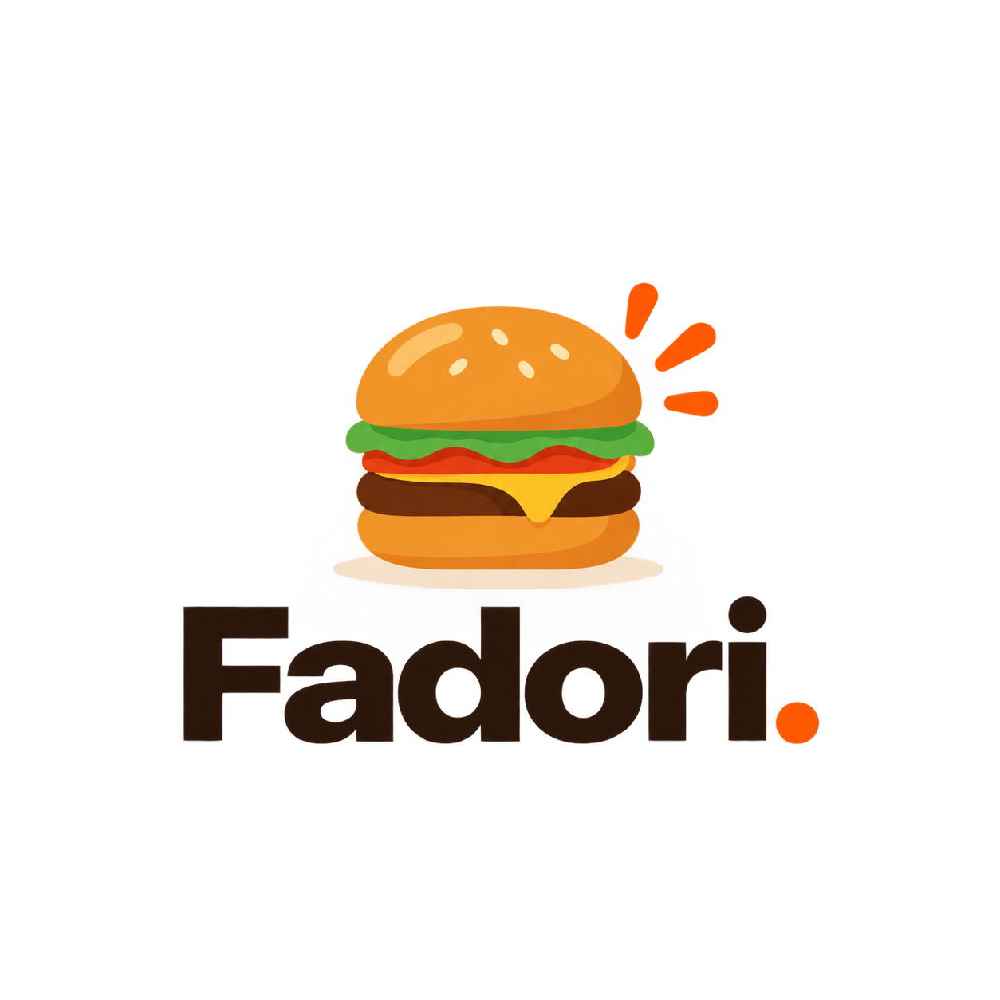

1
Ábrela

Apunta la cámara al código
y toca el aviso.
y toca el aviso.
2
Déjala en tu
pantalla de inicio
pantalla de inicio

Te enseña cómo, según
si traes iPhone o Android.
si traes iPhone o Android.

Pide desde tu teléfono.
Recoge sin hacer fila.
Déjalo listo el día anterior o antes de clases. Te llega tu turno y pasas por él cuando esté hecho.
Proyecto Sin Filas · Bachillerato Rembrandt 3.1
Renata Zoe · Brenda Natalia · Christopher Yuudai · Marco Olvera · Carlos Gutiérrez